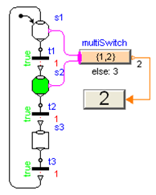

Modelica_StateGraph2.UsersGuide.Tutorial
Modelica_StateGraph2.UsersGuide.Tutorial
Modelica_StateGraph2.UsersGuide.TutorialThis tutorial provides an introduction into the Modelica_StateGraph2 package (which is often abbreviated as StateGraph2). A StateGraph2 model is a state diagram/state machine to model discrete event, reactive and hybrid systems. It is inspired by Grafcet/Sequential Function Charts (SFC), Statecharts, Safe State Machines (SSM) and Mode Automata, and utilizes Modelica as action language. This tutorial consists of the following sections:
| Name | Description |
|---|---|
| Steps and Transitions | |
| Parallel | |
| Actions | |
| Safe StateGraphs | |
| Vectors of Connectors | |
| Application example |
Modelica_StateGraph2.UsersGuide.Tutorial.StepsAndTransitionsThe basic elements of a StateGraph2 model are Steps and Transitions. An example is shown in the next Figure:
The Figure above is a screen-shot of the diagram animation of the StateGraph2 model: Whenever a Step is active or a Transition can fire, the corresponding component is marked in green color.
Steps represent the possible states a StateGraph2 can have. If a Step is active the Boolean variable active of the Step is true. If it is deactivated, active = false. At the initial time, all "usual" Steps are deactivated. The inital Step objects are Steps that are activated at the initial time. They are characterized by a small arrow pointing to the Step (see Figure above) and are defined by setting parameter "initialStep = true" in a Step, see next Figure.
Transitions are used to change the state of a StateGraph2. When the Step connected to the input of a Transition is active and the Transition condition becomes true, then the Transition fires. This means that the Step connected to the input to the Transition is deactivated and the Step connected to the output of the Transition is activated.
The Transition condition is defined via the parameter menu of the Transition object. Clicking on object "T1" in the above Figure, results in the following menu:
In the input field "condition", any type of time varying Boolean expression can be given (in Modelica notation, this is a modification of the time varying variable condition). Whenever this condition is true, the Transition can fire. Additionally, it is possible to activate a timer, via delayedTransition (see menu above) and provide a waitTime. In this case the firing of the Transition is delayed according to the provided waitTime, provided that the condition remains true and the preceding Step remains active during the entire waitTime. The Transition condition and the waitTime are displayed in the Transition icon.
In the above example, the simulation starts at initialStep. After 2 seconds, Transition T1 fires and Step2 becomes active. After another second Transition T2 fires and Step3 becomes active. After an additional second Transition T3 fires and intialStep becomes active. Since time >2, T1 fires at once and Step2 becomes active again, and so on.
In JGrafcharts, Grafcet and Sequential Function Charts, the network of Steps and Transitions is drawn from top to bottom. In StateGraph2 models, no particular direction is defined, since Steps and Transitions are models with input and output connectors that can be arbitrarily placed and connected. Since users of Grafcet and SFC are used to the "top to bottom drawing", in all examples of this library, this convention is used. This has the additional advantage that block diagrams to program actions can be conveniently drawn from left to right as it is usual for block diagrams.
When parameter use_conditionPort is enabled at a Step, the firing condition can be provided as Boolean input signal, instead as entry in the menu of the Transition. An example is given in the next Figure:
In the Figure, additionally parameter use_activePort is set to true at Step2 to provide the active flag of this Step as Boolean output signal. To this output, component OnDelay is connected. If the input of this block becomes true, the output becomes true after a delay time. If the input of this block becomes false, the output is immediately reset to false as well. The output signal of the onDelay block is used as condition input of the Transition. As a result, "T2" fires, once Step "Step2" has been active for 1 second. Of course, any other Modelica block with a Boolean output signal can be connected to the condition input of such a Transition block as well. More details how define such actions graphically are given in section "Actions"
Subgraphs can be aggregated into superstates by using the Parallel component. This component acts both as a composite step (having just one branch) and as a Step that has parallel branches that are executed in parallel to each other. For details, see "section Parallel".
The execution model of a StateGraph2 graph follows from its Modelica implementation: Given the states of all Steps, i.e., whether a Step is active or not active, the equations of all Steps, Transitions, Transition conditions, actions etc. are sorted resulting in an execution sequence to compute essentially the new values of the Steps. If conflicts occur, e.g., if there are more equations as variables, of if there are algebraic loops between Boolean variables, an error occurs. Once all equations have been processed, the active variables of all Steps are updated to the newly calculated values. Afterwards, the equations are again evaluated. The iteration stops, once no Step changes its state anymore, i.e., once no Transition fires anymore. Then, simulation continuous until a new event is triggered, (when a relation changes its value).
With the Modelica_EmbeddedSystems library a StateGraph2 model can also be executed within a discrete controller that is called periodically. Furthermore, production code can be downloaded to a target processor.
Modelica_StateGraph2.UsersGuide.Tutorial.ParallelSubgraphs can be aggregated into superstates by using the Parallel component. This component acts both as a composite step (having just one branch) and as a Step that has parallel branches that are executed in parallel to each other. The Parallel component allows the user to place any StateGraph2 element inside it, especially Steps, Transitions, and Parallel components. In the following Figure, a typical Parallel component "p" is shown:
Here, the branch from "Step3" to "Step5" is executed in parallel to "Step2". A Transition connected to the output of a parallel branch component can only fire if the final Steps of the branches, that are connected to the "exit" port of the Parallel component, are active simultaneously. So, in the Figure above, the Parallel component is left, once Step2 and Step5 are active for one second, since then transition T5 fires.
By default, a Parallel component does not have any outside ports. To achieve the StateGraph2 above, parameters use_inPort, use_outPort, and use_suspend have to be set to true, see next Figure:
A Parallel component has always an entry port, see Figure above, and it may have optionally an exit port. All branches in a Parallel Component must start at the entry port and at least one must terminate at the exit port, provided the exit port is enabled via parameter use_outPort. If a Parallel component shall be entered from the outside via a Transition, parameter use_inPort must be set to true, to enable an input port. If a Parallel Component shall be left via a transition to an outside step, parameter use_outPort must be set to true, to enable the output and the exit port. A Parallel component may be used as initial step, by setting parameter initialStep to true. All branches in a Parallel component may be running autonomously in parallel, by setting use_inPort=false, use_outPort=false, initialStep=true.
A Parallel component may be suspended and sub-sequently resumed. In the Figure above, Transition T6 fires whenever the input signal "u" is true, suspending the Parallel component "p" and the enclosed Steps s2, s3, s4 and s5 for two seconds. When Transition T7 fires, p is re-activated in the same states as when it was suspended (i.e., the same Steps become active, that have been active when the Parallel component was suspended).
Parallel and Step components have vectors of connectors. The dimensions of these vectors are set automatically in the corresponding parameter menu when performing a connection due to the "connectorSizing" annotation (a connection is connected to the next free element of a vectors of connectors when drawing the connection and the new vector dimension is set automatically as a modifier, if the dimension needs to be enlarged). If several Transitions could fire, the Transition that is connected to the lowest index of a vector of connectors really fires (so the firing priority is defined with the connection index). If transitions connected to the outPort and to the suspend port could fire at the same time instant, the transition connected to the outPort has higher priority and really fires.
As mentioned above, inPorts and outPorts of a Parallel component are optional and can be set by the user. If the parallel component has an inPort, then the entry port constitutes the connection between the Transition connected to the inPort and the first Steps to be activated in the Parallel component. If the Parallel component is configured to have an outPort, an exit port shows up on the bottom of the Parallel component, see above Figure. The Parallel component allows the entry port to branch out into several parallel paths. These branches are not allowed to interact. When all Steps connected to the exit port are active, the Parallel component is said to be available and may exit when the Transition connected to the outPort fires. In the Figure above Transition T5 fires when both Step s2 and s5 have been active together for one second and thereby deactivates the Parallel component p. Note, not all branches need to be connected to the exit port, if it is enabled.
The state of a Parallel component is available via the output variable active that can be used in action blocks (e.g. "parallel.active"). Alternatively, via parameter "use_activePort" the Boolean output port "activePort" can be enabled. When the Parallel component is active, activePort = true, otherwise it is false. This port can be connected to Boolean action blocks, e.g., from Modelica_StateGraph2.Blocks.MathBoolean.
No component contained within the Parallel component may be connected to any other component "outside" of the Parallel component, otherwise a translation error occurs. This rule is used to protect the user from making mistakes that could lead to unexpected results and states of the graph that are not well-defined.
In order to graphically organize large graphs in different levels of hierarchy and with encapsulation of variables, use component PartialParallel instead of Parallel.
Modelica_StateGraph2.UsersGuide.Tutorial.ActionsAn important practical aspect of state machines is the ability to assign values and expressions to variables depending on the state of the machine. In StateGraph2, a number of graphical components have been added to package Modelica_StateGraph2.Blocks to facilitate usage in a safe and intuitive way. Since these are just input/output blocks and will also be useful in another context, it is planned to add them to the Modelica Standard Library.
There are a number of standard blocks with common operations/displays of the three basic types (Boolean, Integer, Real) using vector input connectors which enables them to be connected to an arbitrary number of sources. Resizing a vector port and connecting to the next free element is performed automatically when connecting to the connector. So this is much more convenient as with the Modelica.Blocks.Logical blocks. A vector of input connectors is visualized as an ellipse (see the violet ellipse on the left side of the multiSwitch components in the Figures below).
The most important action blocks are the MultiSwitch blocks for the different basic data types (MathBoolean.MultiSwitch, MathInteger.MultiSwitch, MathReal.MultiSwitch). These block select one of N (Boolean, Integer, or Real) expressions depending on an array of Boolean inputs. The index of the first input in the Boolean array that is true defines the index of the expression in the expression array to be used as the scalar output y.
 In the Figure to the right, the MultiSwitch component will output the value y = 1 if Step s1 is active, and will output y = 2 if s2 is active as the expression array is defined as {1,2}. If none of the Boolean array inputs is true, the "else" value will be used instead that is defined in the parameter menu of the MultiSwitch component and is displayed below the icon. Consider the Figure when Step s3 is active - this will set the output of component "multiSwitch" to the "else" value "3". Alternatively, in the parameter menu of the MultiSwitch component it can be defined to keep its previous value, i.e., y = pre(y). If this option would be selected for the Figure to the right, then multiSwitch.y = 2 when Step s3 is active.
The MultiSwitch block is inspired by "Modes" from Mode Automata (Maraninchi and Rémond 2002, see Literature): Variable multiSwitch.y has always a unique value, and this value depends on the expressions that are associated with mutually exclusive active steps. The advantages of MultiSwitch are that (1) the definition is performed in a purely graphical way, (2) it can also be used for mutually non-exclusive active steps in a Parallel component, and (3) it can be implemented in Modelica in a very simple way. The drawback is that the expressions in the MultiSwitch block might no longer be so easy associated with Steps, compared to the alternative where the expressions are defined directly in the respective Steps. This latter approach would, however, require non-trivial extensions to the Modelica language.
The RisingEdge, FallingEdge and ChangingEdge, components can be used to generate "pulse" signals depending on the rising, falling or changing values of a Boolean signal. An example is shown in the Figure below where the Boolean indicator lamp is turned on when Step s2 becomes active and is turned off when Transition t3 fires and Step s3 becomes inactive. Two variants are shown to utilize the "rising" property of a Boolean signal: The Boolean connectors at Steps and Transitions can be activated via parameters "use_activePort" and "use_firePort", respectively. If s2 becomes active, rising = true and therefore multiSwitch.y = true. If transition t3 fires, t3.firePort=true and therefore multiSwitch.y = false.
Modelica_StateGraph2.UsersGuide.Tutorial.VectorsOfConnectors
 The "inPort" (= ellipse at the top part of a Step; see Figure to the right),
the "resume" port (= ellipse at the left part of a Parallel component),
the "outPort" (= triangle at the bottom part of a Step and of a Parallel
component), and
the "suspend" port (= triangle at the left part of a Parallel component)
connectors are vector of connectors, respectively.
When drawing a connection line from, e.g., a Transition to a Step inPort connector, the dimension of the vector of connectors Step.inPort has to be increased by one, say to dimension N, and then the connection has to be performed from Transition.outPort to Step.outPort[N]. Performing this manually is inconvenient and error prone. For this reason, in
Modelica 3.1 (section 17.6) the new annotation connectorSizing was introduced. This annotation is used for all vector connectors in the StateGraph2 library. Example:
The "inPort" (= ellipse at the top part of a Step; see Figure to the right),
the "resume" port (= ellipse at the left part of a Parallel component),
the "outPort" (= triangle at the bottom part of a Step and of a Parallel
component), and
the "suspend" port (= triangle at the left part of a Parallel component)
connectors are vector of connectors, respectively.
When drawing a connection line from, e.g., a Transition to a Step inPort connector, the dimension of the vector of connectors Step.inPort has to be increased by one, say to dimension N, and then the connection has to be performed from Transition.outPort to Step.outPort[N]. Performing this manually is inconvenient and error prone. For this reason, in
Modelica 3.1 (section 17.6) the new annotation connectorSizing was introduced. This annotation is used for all vector connectors in the StateGraph2 library. Example:
model Step
parameter Integer nIn=0 annotation(Dialog(ConnectorSizing=true));
Modelica_StateGraph2.Internal.Interfaces.Step_in inPort[nIn];
...
end Step;
When this model is used and a connection is made to vector "inPort", then the tool increments the dimension nIn by one and performs the connection to this new index. Therefore, performing connections between Steps and Transitions or Parallel components and Transitions is convenient for a user and only requires to draw a line between the corresponding connectors.
Modelica_StateGraph2.UsersGuide.Tutorial.ApplicationExampleIn this section an application example is shown, to demonstrate various features of the Modelica_StateGraph2 library. This example shows the control of a two tank system which is based on the master thesis of Isolde Dressler (see literature).
In the following figure the top level of the model is shown. This model is available from here.
In the right part of the figure, two tanks are shown. At the top part, a large fluid source is present from which fluid can be filled in tank1 when valve1 is open. Tank1 can be emptied via valve2 that is located in the bottom of tank2 and fills a second tank2 which in turn is emptied via valve3. The actual levels of the tanks are measured and are provided as signals level1 and level2 to the tankController.
The tankController is controlled by three buttons, start, stop and shut (for shutdown) that are mutually exclusive. This means that whenever one button is pressed (i.e., its state is true) then the other two buttons are not pressed (i.e., their states are false). When button start is pressed, the "normal" operation to fill and to empty the two tanks is processed:
The above "normal" process can be influenced by the following buttons:
The implementation of the tankController is shown in the next figure:
When the "start" button is pressed, the Modelica_StateGraph2 is within the Parallel step "makeProduct". During normal operation this step is not left.
When the "stop" button is pressed, the "makeProduct" step is at once terminated via the "suspend" port and the Modelica_StateGraph2 waits in step "stopStep1" for further commands. When the "start" button is pressed, the makeProduct step is re-entered via its resume port and the "normal" operation continues at the state where it was aborted by the suspend transition. If the "shut" button is pressed, the Modelica_StateGraph2 waits in the "shutStep" parallel step, until both tanks are empty and then waits at the "startStep" for further input.
The opening and closing of valves is not directly defined in the Modelica_StateGraph2. Instead via the "setValveX" components, the Boolean state of the valves are computed. For example, the output y of "setValve3" is computed as:
y = emptyTanks.active or shutTank2.active
i.e., valve3 is open, when step "emptyTanks" or when step "shutTank2" is active. Otherwise, valve3 is closed.
An alternative implementation of the tank controller is available from here. The differences to the implementation shown above are:
The top level of this alternative implementation of the tank controller is shown in the following figure:
The "MakeProduct" Parallel component is the initial step and performs the "normal" operation. When the "stop" button is pressed, the suspend transition T8 fires, the "MakeProduct" step is suspended and the graph goes in to step "stopStep1". Note, the transition condition of T8 is "bus.stop", i.e., this transition fires when variable stop from the bus is true. When "start" is pressed again, the "MakeProduct" step is resumed at the place where it was suspended. When "shut" is pressed, the Parallel component "ShutStep" is entered to shut down the tank system. Here it is still possible to press the "stop" button and then again continue with "shut".